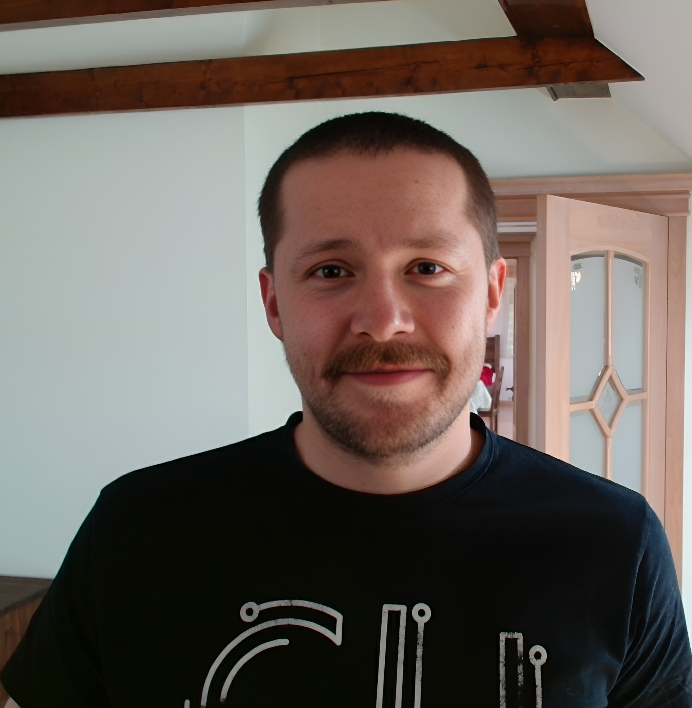

Jul. 2026 - Present
Remote
Remote
solutions engineer · Zębowice, Poland
I don't believe that there are unsolvable tasks - sometimes they require more time.
Software engineer working in fintech, founder of the AgroTech startup Ploryn and co-owner of a family crop farm.

since 2010
Co-owner of a family crop farm run under Integrated Production.
since 2017
Backend engineer working mainly in Go since 2017, comfortable across backend, frontend and operations.
since 2024
Founder of Ploryn, a free farm management platform used by 250+ Polish farms.
since 2026
Senior Software Engineer at a fintech company since 2026.
Software engineer building backend systems, mainly in Go, since 2017. Currently Senior Software Engineer in fintech. Since 2024 founder of Ploryn, a free farm management platform used by hundreds of Polish farms. Co-owner of a family crop farm, which keeps the AgroTech work grounded in practice. Comfortable across backend, frontend and operations. Interested in distributed systems and performance optimization.
Now
Go · React · PostgresDB · OVH · Docker
integrated production · JD tractors :D
Before
Go · React
Go · React · PostgresDB · Redis · GCP · DataDog · Kubernetes · GKE · Terraform
Go · PostgresDB · Redis · AWS · DataDog · Kubernetes · AWS S3 · Terraform
Go · Elasticsearch · DataDog
Go · Java · Python · Bash · Chef · Terraform · Scylla · Aurora/MySQL · DynamoDB · AWS · DataDog
Go · Python · Docker · Ansible · Docker Swarm
Bash · Docker · Ansible · Grafana · Prometheus · Alertmanager
Go
Python · Docker
Python · Go · Bash · Docker
Used to do some Math. Also a Taon.
Golang > C > Prolog > Python
Go · React · PostgresDB
Free farm management platform for Polish farmers. Fields with maps, treatment logs, harvests, warehouse, reports, grain purchase prices and an AI advisor, with an MCP server for AI assistants.
Go daemon built on TDLib that keeps Telegram channel membership in sync with an organization server. Ships an OpenAPI contract and a dev server with admin UI.
Go · TDLib · OpenAPIAgile sprint retrospective tool with multi-phase flow, real-time collaboration over WebSockets and optional AI auto-merge of similar tickets and action proposals. Designed to run behind an OAuth2 proxy.
Go · React · PostgresDB · Redis · WebSockets · oauth2-proxyLightweight CMS written in Go with an admin panel, markdown editor with preview, RSS feed and article view analytics.
Go · TypeScript · PostgresDBService with ML predictions for MMA fights. Co-created with Data Scientists
Astro · GoTool for async ticket estimations
React · GoSimple tool that helps verify frequency range of hearing
Reactenumgen adds String, JSON marshalling and validation methods to Go constant types. ddwrap wraps interfaces with Datadog tracing spans.
GoSimple service with users live stats for OBS usage
HTML · jQueryWeb app for car weight. Simple CRUD, integrated with przelewy24.pl and Auth0
React · Go · PostgresDBWireless temperature monitoring with Raspberry Pi and ESP8266+BME280. Prometheus with Pushgateway as main services
C · Prometheus · GrafanaUniversity project of compiler that generates machine code. First created was 4th in terms of performance on the yearbook. Wrote already 4 of them based on different specifications
C · Flex · BisonBit.ly like URL shortener. Simple REST API with basic analytics.
GoSlack report generator. Generates daily reports with random work and progress.
GoPython bot for spamming random google search images when using keywords.
PythonJQ like CLI tool for HTML except JSON. Crafted for personal usage.
Go